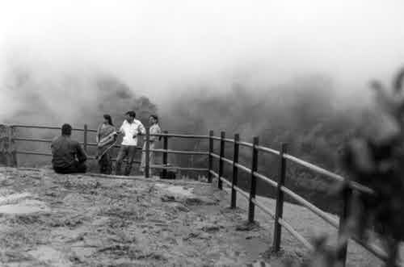
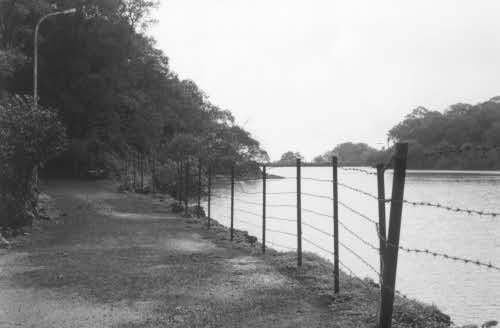
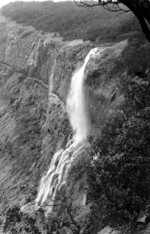
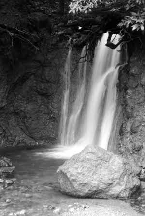
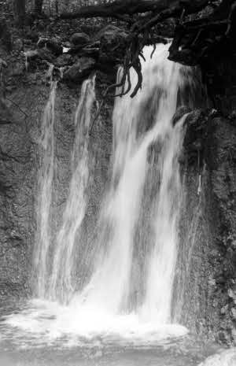
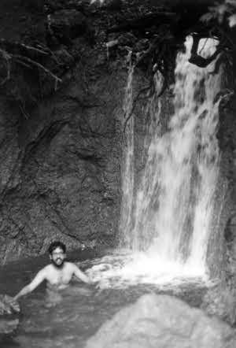

have built up a whole railway line on a difficult mountain side just for fun.
|
| The famed narrow gauge track. The Brits must have been a crazy lot to have built up a whole railway line on a difficult mountain side just for fun. |
|  |
| Echo Point in the clouds. In the monsoons, Matheran is IN the clouds. |
| A monkey. |
|  |
| Lake Charolette and a road. |
|  |
| The runoff from the lake forms a wonderfull large waterfall |
|  |
| A hidden waterfall we found |
|  |
| and spent we an happy hour looking for our lost marbles... |
|  |
| And I took a dip. |